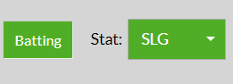

Example
I am giving a detailed example that showcases an average use of the Fangraphs compare tool.
| 1. | This year's class of free agent shortstops are interesting to me, so I'm going to make a comparison of their hitting stats. First, let's define the free agent shortstops. | |
| 2. | Now that I have the list of names I want to compare, next I'll pick my parameters. I think SLG is a good comparison with this tool because it shows the average amount of power these players have. I'll select SLG from the dropdown on the comparison tool. |  |
| 3. | Before I add the names in the compare tool, I have to pick a player to start from. I'll start from Carlos Correa's player page because I think he will be awarded the largest contract out of the shortstops. | |
| 4. | Next, I will add all of the names into the compare tool. | |
| 5. | When I'm ready, I'll click the button that says create comparison. Clicking that button will generate charts to the side comparing all of the players. Here's an example of one of the charts from my comparison of shortstops. | |
| 6. | The last chart looks great, but I don't like how the variable they choose is age. I want to compare their performance by year, regardless of their age. Let's use that chart instead. |